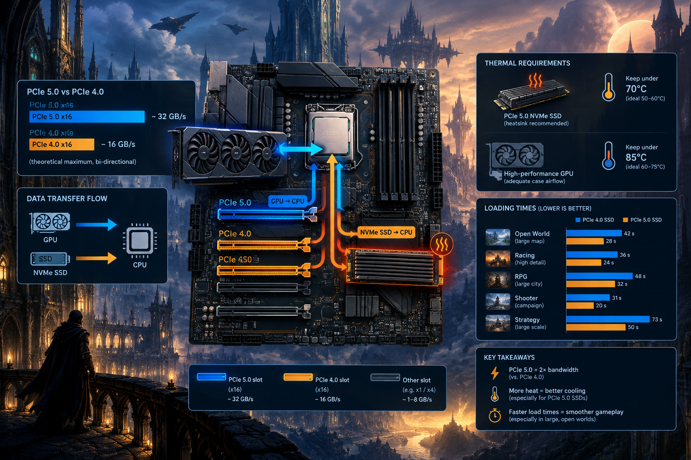
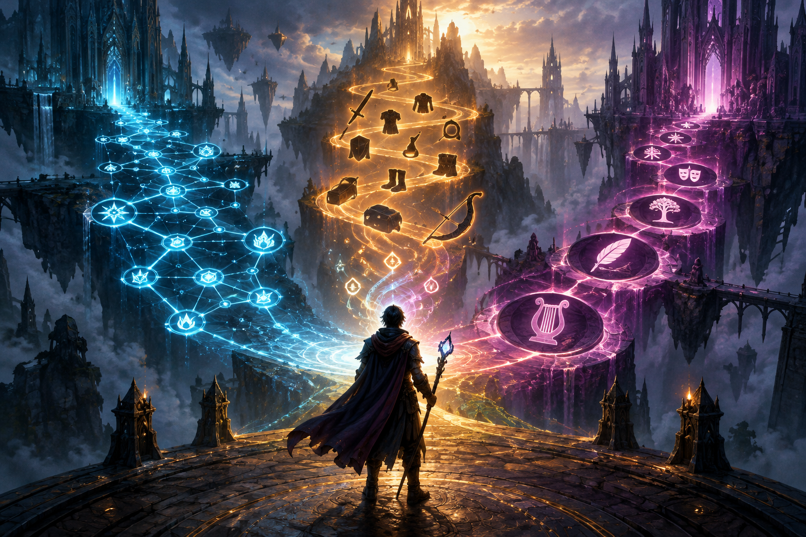
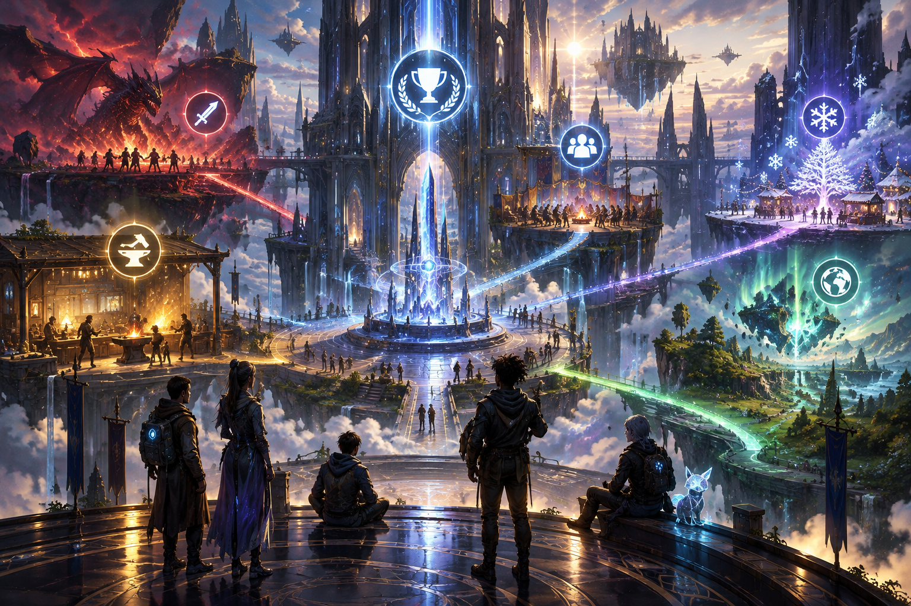

Meet Me at the Table: Why Gaming Conventions Matter More Than Ever in 2026
In a digital-first era, the enduring appeal of in-person gaming conventions reveals profound truths about connection, creativity, and the heart of gaming culture. Explore why, from cosplay corridors to tabletop tournaments, conventions remain vital gathering places for players and creators alike.
READ THE STORY ↗
PCIe 5.0: The Hype, The Hardware, and the Honest Truth for PC Gaming in 2026
Does the leap to PCIe 5.0 finally change anything for real-world gaming, or is it just another number on the box? We dive deep with benchmarks, technical breakdowns, and practical perspectives.
READ THE STORY ↗
The Comeback Code: Why Hardcore Guild Warfare Is Thriving Again in 2026’s MMORPGs
Once pushed to the fringes, open-world PvP and guild-driven warfare are back at the heart of the MMORPG genre. We dig into the driving forces, developer innovations, and the new rules of engagement captivating players in 2026.
READ THE STORY ↗
Beyond the Grind: How Innovative Character Progression Systems Are Redefining RPGs
Modern RPGs are breaking away from tried-and-true leveling formulas—and players are discovering richer, more customizable ways to grow their heroes.
READ THE STORY ↗
Beyond the Game: How In-Game Ecosystems Are Redefining Console Co-Op in 2026
In a year packed with innovation, console co-op has undergone a transformation few saw coming: the rise of persistent, ecosystem-driven experiences. We explore how in-game worlds designed for connection, retention, and reward are turning cooperative play into a lifestyle, not just a mode.
READ THE STORY ↗